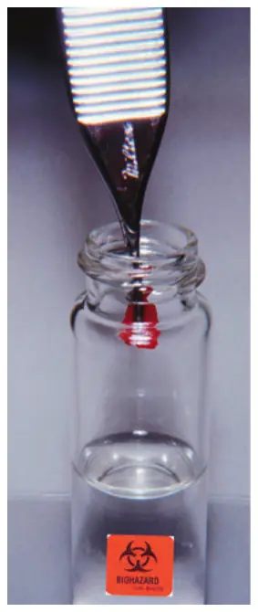
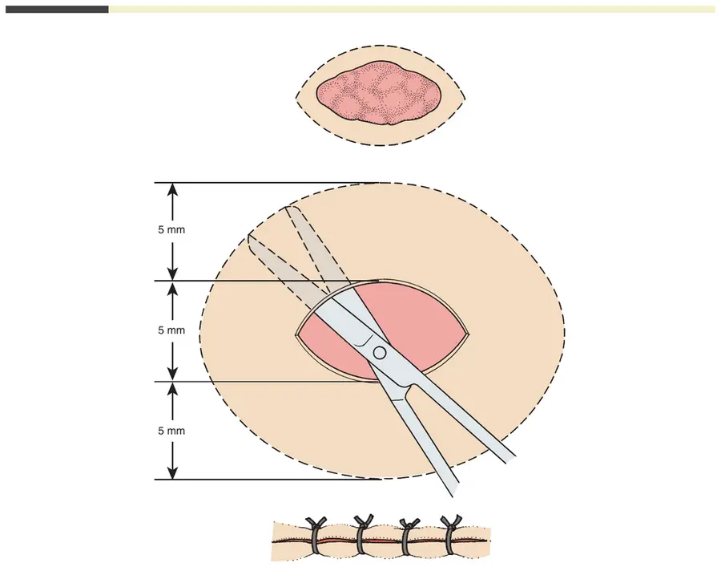

نسخه استخراجشده؛ ترجمه یا تأیید علمی انجام نشده است. وضعیت: captured
اصل کلی: هر نمونهی بافتی باید در وضعیتی نگه داشته شود که برای حفظ معماری بافتشناختی و ساختاری سلولهای ضایعه بهینه باشد.

و پنج راه نابود شدن نمونه: نمونههایی که له شده، یخ زده، خشک شده، سوخته، یا به هر شکل دیگری آسیب دیدهاند، ممکن است وقتی به دست پاتولوژیست دهان و فک و صورت میرسند از نظر میکروسکوپی قابل تشخیص نباشند — و این بیوپسی مجدد را ضروری میکند، که ممکن است شدنی باشد یا نباشد.
و چند قاعدهی عملی که هرکدام یک اشتباه واقعی را میبندند:
و حالا یک عدد که باید حفظ کنی: حجم فرمالین باید دستکم ۲۰ برابر حجم خود نمونه باشد.
و دو بررسی پیش از رها کردن نمونه:
و یک قاعدهی برچسبگذاری: اگر نمونه برای پاتولوژیست پست میشود، باید با برچسب خطر زیستی مورد تأیید OSHA برچسبگذاری شود؛ ولی اگر نمونه بهصورت داخلی — مثلاً درون یک بیمارستان — منتقل میشود، چنین برچسبی الزامی نیست.
مسئله: پاتولوژیست نمونهای را در ظرف میبیند که جهت آناتومیکش را نمیداند. اگر گزارش بدهد «حاشیه درگیر است»، تو نمیدانی کدام حاشیه.

و راهحل: اگر به دیسپلازی یا بدخیمی مشکوکی، برای پاتولوژیست کمککننده است که جراح یکی از حاشیههای نمونه را با یک بخیهی شلبسته «برچسب» بزند تا همترازی آناتومیک نمونه مشخص شود.
و فایدهاش دقیقاً این است: این کار به پاتولوژیست اجازه میدهد دقیقاً گزارش کند کدام حاشیهها یا نواحی مشخص — اگر اصلاً چنین چیزی باشد — نیاز به برداشت وسیعتر یا عمیقتر دارند.
و مستندسازیاش: جهتگیری و محل بخیهی نشانهگذار باید در فرم ارسال سرویس پاتولوژی ترسیم شود، مستند شود، یا هر دو.
و یک کاربرد دوم و هوشمندانه — شمارش با تعداد بخیه: برچسبگذاری با بخیه میتواند برای شناسایی نمونههای متعدد از یک ضایعه هم به کار رود، همراه با ترسیمی که مشخص میکند هر نمونه از کدام ناحیه برداشته شده و جهتش چیست.
ارسال نمونه: هر مطب دندانپزشکی باید از پیش ارتباطی با یک سرویس معاینهی پاتولوژی دهان و فک و صورت محلی یا منطقهای برقرار کرده باشد.
و یک احتیاط عملی دربارهی برچسب بطری: نام بیمار و نام دندانپزشک ارجاعدهنده باید روی برچسب بطری نمونه هم نوشته شوند — برای موردی که بطری از فرم ارسال یا ظرف بیرونی پستی جدا شود — مثلاً اگر بسته در مسیر آسیب ببیند.
و فرم ارسال بیوپسی، این اطلاعات را جمع میکند: دادههای جمعیتشناختی بیمار، نام و اطلاعات تماس دندانپزشک ارسالکننده، شرححالهای مرتبط پزشکی، خانوادگی، اجتماعی، و ضایعه، توصیف بالینی ضایعه و نمونه، و تشخیصهای افتراقی بالینی فرضی. و هنگام برخورد با ضایعات داخلاستخوانی، گنجاندن یک رادیوگراف با کیفیت تشخیصی میتواند مفید باشد.
نوع سؤال: ساخت کلمه · 7 خانه
حروف منبع: ل · ی · م · ا · ر · ن · ف